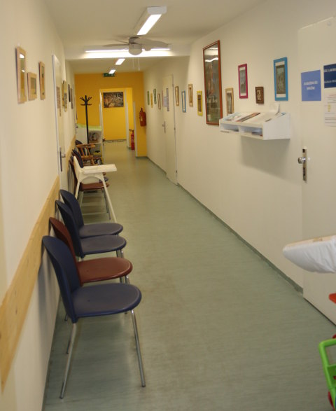

Motivace
Už malou mě bavilo sportovat a pomáhat druhým. Proto nebylo těžké stát se fyzioterapeutkou a pokračovat v rodinné tradici a věnovat se léčbě dětí s pohybovým postižením. Mám tři děti, které jsem v ranném vývoji také krátce léčebně podpořila. Vývojová kineziologie podle Vojty se stala mým základem pro léčbu pohybového aparátu u dětí i dospělých.
Vzdělání
- 1995 - 2002
- Univerzita Karlova, FTVS, Praha
Obor/specializace: Tělesná a pracovní výchova zdravotně postižených - 1987 - 1991
- SZŠ, Praha
Obor/specializace: Rehabilitační pracovník - 1987 - 2010
- Institut postgraduálního vzdělávání ve zdravotnictví, Praha
Obor/specializace: Aplikovaná fyzioterapie

Pracovní zkušenosti
- 1991
- Fyzioterapie v Domově sv. Rodiny – dětský pacienti s těžkými kombinovanými poruchami pohybového aparátu.
- 1993 (krátce 3. měsíce)
- Fyzioterapie v NsP v Říčanech, chirurgie, interna, léčebna pro dlouhodobě nemocné.
- 1994 - 1998
- Fyzioterapeutka v NsP v Kostelci nad Černými Lesy – ambulantní i hospitalizovaní pacienti s vrozeným, získaným onemocněním pohybového aparátu, kardiologičtí pacienti, dospělí pacienti s vertebrogenními obtížemi, pacienti s jiným neuromuskululárním onemocněním, ortopedičtí pacienti.
- 1998 – nyní
-
OSVČ – Ortenovo nám. 1505/37, Praha 7
Fyzioterapie
Fyzioterapie centrální parézy v dětském i dospělém věku, vertebrogenní onemocnění akutní i chronické skoliózy, periferní parézy, při nepoškození alfa motoneuronu v předním rohu míšním, periartritis humeroskapularis, ortopedické vady nohou, hrudníku, dysplazie kyčlí, stavy po operacích hrudníku, problémy dechových funkcí, astma bronchiale...
Kurzy a školení
- od 1996
- RL - CORPUS
Metoda V. Vojty
Certifikát: Osvědčení - od 2007
-
Česká lékařská společnost J.E.Purkyně, SPOLEČNOST PRO MYOSKELETÁRNÍ MEDICÍNU, sekce fyzioterapeutická
Diagnostika a terapie funkčních poruch
Certifikát: Osvědčení - od 2001
-
UK v Praze, 2. lékařská fakulta, Klinika rehabilitace
Vývojová kineziologie v manuální medicíně
Certifikát: absolvování kurzu
Průběžně mnoho pracovních seminářů a školících akcí Vojtovy metody pod organizací Československé rehabilitační společnosti Dr. Vojty – pasivně i aktivně. A také pod organizací IVG.
